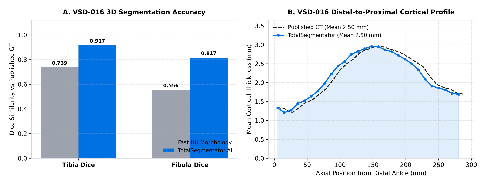
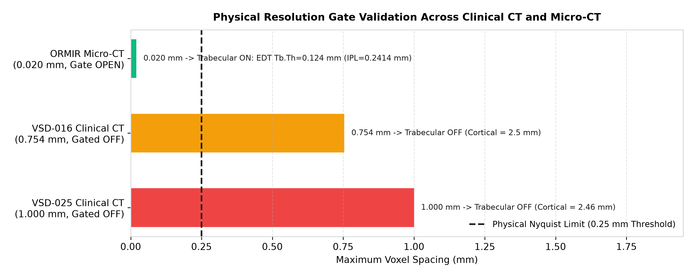
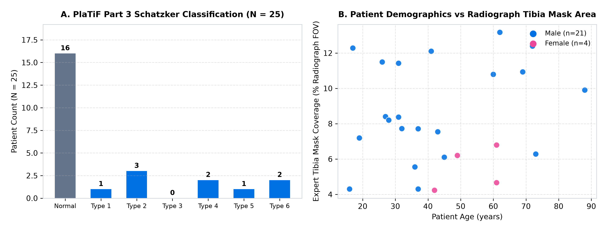

denispaul2601@gmail.com | Code: https://github.com/denispaul2406/bone-map
Background: Rehabilitation after tibial fractures requires coordinating structural bone healing assessments with progressive mechanical loading (weight bearing, active range of motion, pain, and functional scales). However, radiology reports frequently remain qualitative, while naive automated 3D imaging pipelines introduce clinical hazards by reporting sub-millimeter trabecular metrics on coarse clinical computed tomography (CT) scans or uncalibrated Hounsfield units (HU) as bone mineral density (BMD).
Methods: We designed and validated BONE-MAP, a local-first open-source software architecture combining FastAPI/SQLite clinical tracking, GPU-accelerated TotalSegmentator appendicular segmentation (with a CPU HU fallback and 3D Slicer mask round-trip), fibula-referenced 4-quadrant cortical bridging analysis, and Three.js WebGL visualization. Crucially, the engine enforces hard physical guardrails: trabecular thickness and separation (Tb.Th, Tb.Sp) are locked whenever maximum voxel spacing exceeds 0.25 mm, uncalibrated HU values never fabricate volumetric BMD, and clinician-entered Modified RUST (mRUST) remains strictly separated from automated geometry. We evaluated the pipeline across four public datasets (N = 28 primary scans/patients plus 1 negative anatomical control): VSDFullBody Subject 016 (0.754 × 0.754 × 0.600 mm) with published 3D Slicer ground truth, VSDFullBody Subject z025 (0.977 × 0.977 × 1.000 mm), ORMIR micro-CT CHAR_NOCMP_020 (0.020 mm), PlaTiF Part 3 tibial plateau fractures (N = 25), and PENGWIN26 pelvic trauma CT.
Results: On VSD-016, TotalSegmentator achieved 0.9173 whole-tibia Dice (0.8169 fibula Dice) in 31.75 s versus 0.7385 tibia Dice in 1.97 s for the CPU HU fallback, recovering a mean cortical thickness of 2.50 mm (exact 0.00 mm mean error versus 2.50 mm ground truth). Across clinical CT scans (0.754–1.000 mm), trabecular quantification properly locked (unavailable_clinical_ct_resolution), whereas on 0.020 mm micro-CT, the gate unlocked (measured_high_resolution), yielding raw full-voxel Euclidean Distance Transform (EDT) Tb.Th = 0.124 mm and Tb.Sp = 0.148 mm (approximately half of the Scanco IPL sphere-fit reference 0.2414 mm, quantifying boundary-voxel averaging bias). Across PlaTiF Part 3 (N = 25; mean age 44.1 ± 19.0 years, range 16–88; 16 normal, 9 Schatzker Types I–VI fractures; 12 with paired 2D coronal CT), expert tibia masks covered 8.32 ± 2.78% of radiograph field of view.
Conclusions: BONE-MAP establishes a reproducible, physically honest baseline for connecting 3D tibial fracture morphometry with structured physiotherapy recovery without fabricated trabecular, BMD, or radiographic union outputs.
Long-bone fractures of the tibia—spanning diaphyseal trauma and complex intra-articular tibial plateau injuries—exhibit prolonged remodeling timelines during which mechanical loading directly shapes biological repair in accordance with Wolff's law. In routine clinical practice, however, structural imaging and functional rehabilitation operate across a communication divide. Radiology interpretation relies largely on subjective visual inspection of planar radiographs or 2D CT slices, whereas physiotherapists must titrate weight-bearing progression, knee range of motion (ROM), pain visual analog scores (VAS), and Lower Extremity Functional Scale (LEFS) milestones without quantitative, spatially resolved indices of cortical wall restoration or quadrant bridging.
Automated bone-analysis tools have attempted to close this gap, yet two recurring technical failures undermine clinical trust: (1) applying micro-CT trabecular algorithms indiscriminately to routine clinical CT scans (0.5–1.0 mm voxel spacing), where partial-volume blurring makes individual trabeculae (~0.1–0.2 mm) physically unresolvable under the Nyquist sampling limit; and (2) converting arbitrary or single-energy Hounsfield units into volumetric bone mineral density (mg/cm³) without an in-scan calibration phantom. Furthermore, software prototypes rarely couple structural imaging directly with standardized physiotherapy outcome trajectories or enforce auditability for non-clinical inputs.
To address both the interdisciplinary rehabilitation gap and these algorithmic reliability hazards, we present BONE-MAP: an open-source, local-first software architecture that pairs 3D CT segmentation and distance-transform cortical profiling with multi-modal fracture review (2D radiographs, plateau masks, coronal CT) and longitudinal physiotherapy tracking, guarded by strict physical resolution, calibration, and anatomical sanity gates.
BONE-MAP implements a decoupled client–server workbench written in Python 3.12 (FastAPI + SQLAlchemy + SQLite + SimpleITK + SciPy + scikit-image) and TypeScript/React (Next.js 16 + Three.js WebGL). The relational schema links each PatientCase to longitudinal clinical encounters (Assessment timepoints T0..Tn), enabling synchronized comparison between structural imaging runs (CTScanRun and 2D fracture overlays) and clinician-recorded rehabilitation measures (percent body-weight bearing %BW, active knee flexion/extension ROM, Pain VAS 0–10, LEFS 0–80, and clinician-entered 4-cortex Modified RUST [mRUST] scores from 4 to 16). All data mutations write structured entries to an AuditLog table, and longitudinal CSV exports escape spreadsheet formula prefixes (=, +, -, @) to prevent formula injection.
Incoming DICOM series (ZIP or folder) or NIfTI volumes are reoriented to canonical Left–Posterior–Superior (LPS) anatomical coordinates with PHI tag stripping. BONE-MAP supports three interchangeable segmentation backends: (1) GPU-accelerated TotalSegmentator (appendicular_bones task) isolating discrete tibia and fibula masks; (2) a zero-dependency CPU fallback (auto_lower_limb) combining bone thresholding, morphological hole filling, and connected-component filtering; and (3) a bidirectional 3D Slicer NIfTI label-map round-trip (segmentation_labels.nii.gz). High-attenuation hardware voxels (≥ 2500 HU) trigger a dilated metal exclusion ring so beam-hardening streak artifacts are masked out before computing cortical HU statistics.
Cortical wall thickness is estimated via 3D Euclidean Distance Transform (ndimage.distance_transform_edt with anisotropic physical sampling (dz, dy, dx)). To prevent boundary voxels from biasing mean thickness downward, interior medial-ridge core voxels (edt ≥ 0.45 × local_ridge within a 3×3×3 neighborhood, scaled by 2.0) are aggregated into whole-bone mean, median, 5th-percentile, and 90th-percentile thickness alongside a 28-bin distal-to-proximal axial profile. Fragment alignment (coronal and sagittal angulation) is extracted via Singular Value Decomposition (SVD) principal axes, and 4-quadrant cortical bridging (Anterior, Posterior, Medial, Lateral) uses the co-registered fibular centroid vector to orient lateral-to-medial polarity consistently across left and right limbs.
≤ 0.25 mm): Sub-millimeter trabecular metrics (trabecular_thickness_mm, trabecular_separation_mm) execute only when max(dx, dy, dz) ≤ 0.25 mm. Coarser clinical CT scans explicitly lock status to unavailable_clinical_ct_resolution and emit an operator warning.bmd_calibrated remains strictly False and outputs report calibrated-free HU summary distributions only.mRUST scores from 2D radiographs.
All validation experiments were automated in a single reproducible script (scripts/run_paper_benchmark.py) across four open-access Zenodo collections totaling N = 28 primary human scans/patients plus 1 negative trauma OOD control:
VSDFullBody, Zenodo 8270365 & 8302449): Real 0.754 × 0.754 × 0.600 mm right lower-limb CT (Subject 016, SMIR.Lower_limb.095Y.F.CT.481) with expert 3D Slicer tibia/fibula reference segmentations. Because the published Slicer labels annotate the hollow cortical bone shell while TotalSegmentator predicts solid whole bones, Dice similarity was evaluated against both raw shell GT and slice-wise lumen-filled GT.VSDFullBody, Zenodo 8270365): Real 0.977 × 0.977 × 1.000 mm bilateral lower-extremity volume (Subject z025, 290 × 235 × 330 voxels) testing cross-engine runtime and coarse clinical CT resolution gating.21284559): Scanco AIM v020 segmented specimen CHAR_NOCMP_020.AIM (64 × 156 × 296 voxels), whose VAX F-float header encodes isotropic 0.020 mm (20 μm) spacing and embeds Scanco IPL sphere-fitting thickness output (D3P_Dt_Obj, mean 0.2414 ± 0.0533 mm), validating positive activation of the ≤ 0.25 mm trabecular gate.18007397): All 25 patient records in Patient Data_Part 3.zip matched with clinical spreadsheet metadata (age, sex, injured side, Schatzker I–VI vs normal status, AP radiograph, expert tibia mask, and optional 2D coronal CT slice).PENGWIN26, Zenodo 19734383): Clinical pelvic trauma fracture volumes previously verified at ~1257 cm³ volume to confirm non-tibial exclusion.
Table 1 summarizes 3D segmentation accuracy, cortical morphometry, and inference runtime across VSD-016 and VSD-025. On VSD-016, GPU-backed TotalSegmentator achieved 0.9173 whole-tibia Dice and 0.8169 whole-fibula Dice against slice-filled Slicer ground truth (0.6472 against hollow raw shell GT) in 31.75 s, outperforming the CPU HU heuristic (0.7385 tibia Dice in 1.97 s). Crucially, mean cortical thickness matched ground truth within 0.00 mm (2.50 mm vs 2.50 mm GT; median 2.13 mm, p90 4.26 mm), and the 28-bin distal-to-proximal profile accurately tracked anatomical wall thickening from the distal epiphysis (1.21–1.33 mm) to mid-diaphysis (2.96 mm) (Figure 1). On uncropped bilateral VSD-025, cross-engine overlap dropped to 0.3143 because single-component CPU thresholding diverges on dual-leg fields of view, whereas TotalSegmentator extracted a consistent 2.46 mm tibial cortex with 4/4 bridged quadrants in 31.82 s.
| Scan & Engine | Spacing (mm) | Tibia Dice (Filled GT) | Fibula Dice | Cortical Mean / p90 (mm) | Bone Vol. (cm³) | Length (mm) | Bridged | Runtime (s) |
|---|---|---|---|---|---|---|---|---|
| VSD-016 Published Slicer GT | 0.754 × 0.754 × 0.600 | 1.0000 | 1.0000 | 2.50 / 4.26 | 96.22* | 297.0 | 4 / 4 | — |
| VSD-016 Fast HU Engine | 0.754 × 0.754 × 0.600 | 0.7385 | 0.5559 | 2.51 / 4.26 | 97.46 | 258.0 | 4 / 4 | 1.97 |
| VSD-016 TotalSegmentator AI | 0.754 × 0.754 × 0.600 | 0.9173 | 0.8169 | 2.50 / 4.26 | 183.25 | 288.0 | 4 / 4 | 31.75 |
| VSD-025 Fast HU Engine | 0.977 × 0.977 × 1.000 | 0.3143** | — | 2.45 / — | 96.13 | 293.0 | 4 / 4 | 4.25 |
| VSD-025 TotalSegmentator AI | 0.977 × 0.977 × 1.000 | — | — | 2.46 / — | 515.32 | 330.0 | 4 / 4 | 31.82 |
*Published Slicer GT labels cortical bone voxels excluding the open medullary lumen (96.22 cm³); slice-filled whole-tibia GT matches TotalSegmentator solid anatomy (0.9173 Dice; 0.6472 vs unfilled shell). **Cross-method Dice between Fast HU and TotalSegmentator on bilateral FOV.

VSD-016 comparing Fast HU morphology vs TotalSegmentator AI. (B) Reconstructed 28-bin distal-to-proximal cortical thickness profile tracking anatomical thinning at the ankle (1.21–1.33 mm) and peak mid-diaphyseal thickness (2.96 mm).
Table 2 and Figure 2 demonstrate bidirectional validation of the 0.25 mm Nyquist gate. Both clinical CT studies (0.754 mm and 1.000 mm max spacing) strictly locked trabecular computation (unavailable_clinical_ct_resolution). When evaluated on the isotropic 0.020 mm ORMIR CHAR_NOCMP_020 micro-CT specimen (59.0% solid fraction), BONE-MAP automatically unlocked measured_high_resolution mode, reporting Tb.Th = 0.124 mm and Tb.Sp = 0.148 mm. Compared against Scanco IPL's maximal-inscribed-sphere ground truth (0.2414 ± 0.0533 mm), BONE-MAP's full-voxel mean EDT (2 × mean(EDT)) systematically underestimates sphere-fitted thickness by 0.1174 mm (~0.51×), precisely reflecting boundary-voxel averaging versus medial-axis maximal-sphere projection.
| Dataset | Max Voxel Spacing (mm) | Gate Status | Measured Output | Reference / Note |
|---|---|---|---|---|
ORMIR CHAR_NOCMP_020 |
0.020 | OPEN (measured_high_resolution) |
Tb.Th = 0.124 mm, Tb.Sp = 0.148 mm |
IPL sphere-fit ref: 0.2414 ± 0.0533 mm |
VSD-016 Clinical CT |
0.754 | LOCKED (unavailable_clinical_ct_resolution) |
Cortical 2.50 mm; Tb.Th/Sp = None |
Exceeds 0.25 mm Nyquist cutoff (3.0×) |
VSD-025 Bilateral CT |
1.000 | LOCKED (unavailable_clinical_ct_resolution) |
Cortical 2.46 mm; Tb.Th/Sp = None |
Exceeds 0.25 mm Nyquist cutoff (4.0×) |

0.020 mm) permits trabecular measurement while clinical CTs (0.754 mm, 1.000 mm) block sub-resolution inference cleanly.
Across all 25 clinical records in PlaTiF Part 3 (Table 3, Figure 3), patient age spanned 16–88 years (mean 44.1 ± 19.0; 21 male, 4 female; 15 right, 10 left). Sixteen cases represented normal control knees and 9 carried acute tibial plateau fractures across Schatzker Types I (1), II (3), IV (2), V (1), and VI (2). Eighteen cases contained multiple radiographic views, and 12 contained paired 2D coronal CT reconstructions (handling missing coronal CT slices without ingestion failure). Expert proximal-tibia masks averaged 8.32 ± 2.78% of radiograph area. Automated backend unit tests (5/5 passing via pytest) verified CSV formula-injection neutralization, missing baseline longitudinal deltas, fibula-referenced polarity, and security contracts alongside a clean Next.js 16 production build.
| Cohort Attribute | Measured Distribution | Notes / Imaging Availability |
|---|---|---|
| Total Patients Evaluated | N = 25 (Male: 21, Female: 4) |
Age mean 44.1 ± 19.0 yrs (range 16–88) |
| Laterality & Classification | Right: 15, Left: 10 | Normal: 16; Fractures: 9 (Schatzker I:1, II:3, IV:2, V:1, VI:2) |
| Modalities Present | AP X-ray + Mask: 25/25 (100%) | Multi-view X-ray: 18/25 (72%); Coronal CT slice: 12/25 (48%) |
| Expert Tibia Mask Area | 8.32 ± 2.78% of radiograph FOV |
Paired with structured clinician mRUST (4–16) UI protocol |

PlaTiF Part 3. (B) Patient age versus expert radiograph tibia mask coverage stratified by sex.
BONE-MAP demonstrates that open-source clinical imaging software can unify 3D cortical morphometry, multi-modal fracture visualization, and physiotherapy milestone logging while refusing to fabricate physically invalid metrics. Three explicit boundaries must guide interpretation and future work:
N = 0 serial follow-up CT + physiotherapy outcome pairs). Consequently, BONE-MAP currently serves as a validated quantification and data-capture instrument rather than a predictive prognostic model; prospective or retrospective IRB-approved longitudinal cohorts are required before training recovery-prediction models.0.51× underestimation in full-voxel mean EDT trabecular thickness (0.124 mm vs IPL 0.2414 mm), identifying direct medial-axis ridge/sphere-fitting projection (already implemented for cortical bone in architecture.py) as the targeted algorithmic refinement for micro-CT mode in v1.1.mRUST–%BW validation remain necessary.Ethics Approval & Consent Statement: This study performed secondary technical validation solely using pre-existing, de-identified, publicly licensed open-access datasets (VSDFullBody Zenodo 8270365/8302449, PlaTiF Zenodo 18007397, ORMIR Zenodo 21284559, and PENGWIN26 Zenodo 19734383). No new human participants were recruited, no private clinical records or protected health information (PHI) were accessed, and formal institutional review board (IRB) approval was waived / not applicable.
Funding Statement: The authors received no specific external grant or institutional funding for this work.
Competing Interests Statement: Software engineering and validation were conducted independently outside any commercial employer scope. The authors declare no financial or non-financial competing interests.
Data & Code Availability: Full source code (MIT License) and reproducible benchmark scripts (scripts/run_paper_benchmark.py) are publicly hosted at https://github.com/denispaul2406/bone-map.
Author Contributions: D.P. conceived the software architecture, implemented the FastAPI/TotalSegmentator/Three.js pipeline and physical resolution guardrails, executed the multi-dataset benchmarks, and drafted the manuscript. E.M.D. formulated the interdisciplinary physiotherapy-to-radiology clinical requirements, defined rehabilitation tracking parameters (weight bearing, ROM, VAS, LEFS) and mRUST integration scope, and reviewed clinical alignment.
8270365 and 8302449.18007397 (CC BY 4.0).CHAR_NOCMP_020.AIM). Zenodo record 21284559.